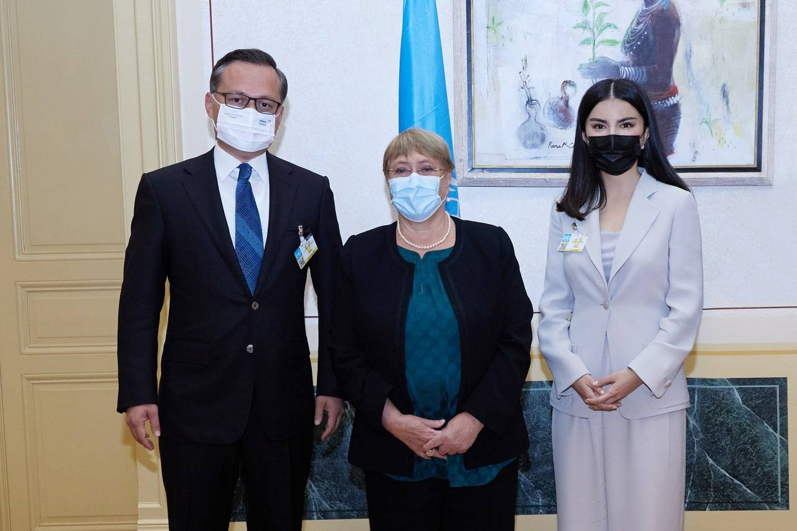

Трагедия в Намангане вновь разожгла спор о смертной казни в Узбекистане
После дела о насилии над пятилетней девочкой глава Администрации президента Саида Мирзиёева призвала применять смертную казнь; правозащитники подчёркивают, что она не вернётся.

Дело о насилии над пятилетней девочкой в государственном детском саду в Наманганской области потрясло Узбекистан и вновь разожгло общественную дискуссию о наказаниях за такие преступления — вплоть до смертной казни.
Что произошло
По официальным данным, инцидент произошёл в государственном детском саду Учкурганского района Наманганской области. Уголовное дело было возбуждено 12 сентября; подозреваемый — завхоз детского сада — задержан в тот же день и по решению суда заключён под стражу. Детали не разглашаются в интересах следствия.
Детский омбудсман попросил Министерство дошкольного и школьного образования провести проверку безопасности; проверки начались в государственных детсадах. Национальное агентство социальной защиты сообщило, что оказывает пострадавшей психологическую и реабилитационную помощь.
Что сказала Саида Мирзиёева
Глава Администрации президента Саида Мирзиёева отреагировала 27 сентября в своём Telegram-канале. Она заявила, что, по её мнению, к таким преступлениям следует применять смертную казнь, и подчеркнула, что наряду с преступником ответственность понесут и должностные лица, «чья халатность допустила эту трагедию». По её словам, готовятся предложения об изменении законодательства для максимального усиления ответственности за преступления против детей.
Вернётся ли смертная казнь
Узбекистан отменил смертную казнь с 1 января 2008 года, а статья 25 Конституции запрещает её; для возвращения потребовалась бы конституционная поправка. Детский омбудсман предложил ввести пожизненное лишение свободы за тяжкие половые преступления.
Предостережение правозащитников
Абдурахмон Ташанов, глава общества по правам человека «Эзгулик», призвал не воспринимать слова Мирзиёевой как начало кампании по восстановлению смертной казни, подчеркнув, что она не будет возвращена. Так спор разделился на две линии: сторонники максимальных наказаний и защитники конституционного запрета.